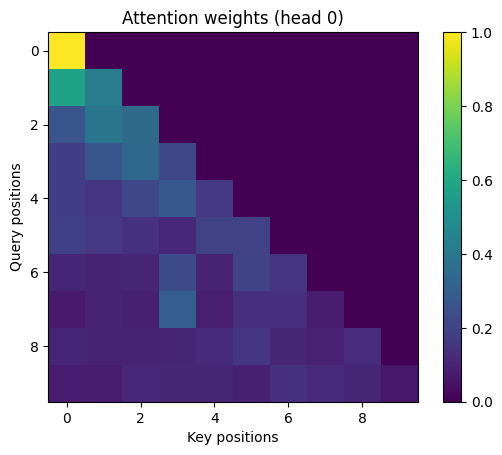

import math
import numpy as np
import torch
import torch.nn as nn
import torch.nn.functional as F
torch.manual_seed(0)<torch._C.Generator at 0x7fe60b34aff0>Madhav Kanda
December 7, 2025
This single notebook walks through the core building blocks of a GPT-style Transformer as implemented from scratch.
Outline:
Notation legend used throughout:
B: batch sizeT: sequence lengthd_model (a.k.a. C): embedding sizeH (a.k.a. n_head): number of attention headsd_head (a.k.a. D): per-head size, d_model / HWe will use NumPy for a didactic, tiny attention example and PyTorch for the full modules.
Less-familiar PyTorch utilities referenced below:
nn.Linear(in, out): affine projection along the last dimensionnn.LayerNorm(d_model): normalizes features in the last dimensionF.softmax(x, dim=-1): softmax over the last dimensionTensor.view(...): reshape without copy (requires contiguous() memory)Tensor.transpose(dim0, dim1): swap two dimensionsTensor.contiguous(): ensure contiguous memory layout so view can workTensor.masked_fill(mask, value): set entries where mask==True to valueregister_buffer(name, tensor): attach non-parameter tensors (e.g., constants) to modules so they move with the device and save in checkpointsGoal: inject token position information into embeddings so the model knows order.
Shapes:
x: (B, T, d_model)pe: (max_len, d_model)pe[:T]: (T, d_model) → unsqueeze(0) → (1, T, d_model), broadcast to (B, T, d_model)Flow (sinusoidal implementation):
pe of size (max_len, d_model) using sin/cos at geometrically spaced frequencies:
sin(position · 10000^{-2i/d_model})cos(position · 10000^{-2i/d_model})forward, slice pe[:T], add a batch axis, and return x + pe[:T].class SinusoidalPositionalEncoding(nn.Module):
def __init__(self, max_len: int, d_model: int):
super().__init__()
pe = torch.zeros(max_len, d_model)
position = torch.arange(0, max_len, dtype=torch.float).unsqueeze(1)
div_term = torch.exp(
torch.arange(0, d_model, 2).float() * (-math.log(10000.0) / d_model)
)
pe[:, 0::2] = torch.sin(position * div_term)
pe[:, 1::2] = torch.cos(position * div_term)
self.register_buffer("pe", pe)
def forward(self, x: torch.Tensor):
B, T, _ = x.shape
return x + self.pe[:T].unsqueeze(0)We prevent a token at time t from attending to future tokens > t.
Shapes and broadcasting:
(1, 1, T, T) with True above the main diagonal(B, H, T, T)(1,1,T,T) across (B,H,T,T) when we call masked_fillFlow:
torch.triu(..., diagonal=1)(1,1,T,T) so it broadcasts cleanly over batch and headsShapes (single head):
X: (1, T=3, d_model=4)Wq/Wk/Wv: (d_model=4, d_k=2)Q, K, V: (1, 3, 2)Q @ K^T: (1, 3, 3)(1, 3, 3) after softmax over the last dim(1, 3, 2) = weights @ VFlow:
Q=XWq, K=XWk, V=XWvsqrt(d_k) for stable gradients-1e9 (≈-inf) so softmax→0 for futureweights @ VNotes:
exp to avoid overflow (softmax trick).# Tiny NumPy self-attention demo
X = np.array(
[[[0.1, 0.2, 0.3, 0.4], [0.5, 0.4, 0.3, 0.2], [0.0, 0.1, 0.0, 0.1]]],
dtype=np.float32,
)
Wq = np.array([[0.2, -0.1], [0.0, 0.1], [0.1, 0.2], [-0.1, 0.0]], dtype=np.float32)
Wk = np.array([[0.1, 0.1], [0.0, -0.1], [0.2, 0.0], [0.0, 0.2]], dtype=np.float32)
Wv = np.array([[0.1, 0.0], [-0.1, 0.1], [0.2, -0.1], [0.0, 0.2]], dtype=np.float32)
Q = X @ Wq
K = X @ Wk
V = X @ Wv
print("Q shape:", Q.shape, "\nQ=\n", Q[0])
print("K shape:", K.shape, "\nK=\n", K[0])
print("V shape:", V.shape, "\nV=\n", V[0])
scale = 1.0 / np.sqrt(Q.shape[-1])
attn_scores = (Q @ K.transpose(0, 2, 1)) * scale
mask = np.triu(np.ones((1, 3, 3), dtype=bool), k=1)
attn_scores = np.where(mask, -1e9, attn_scores)
weights = np.exp(attn_scores - attn_scores.max(axis=-1, keepdims=True))
weights = weights / weights.sum(axis=-1, keepdims=True)
print("Weights shape:", weights.shape, "\nAttention Weights (causal)=\n", weights[0])
out = weights @ V
print("Output shape:", out.shape, "\nOutput=\n", out[0])Q shape: (1, 3, 2)
Q=
[[ 0.01 0.07 ]
[ 0.11000001 0.05 ]
[-0.01 0.01 ]]
K shape: (1, 3, 2)
K=
[[0.07 0.07 ]
[0.11000001 0.05 ]
[0. 0.01 ]]
V shape: (1, 3, 2)
V=
[[ 0.05 0.07]
[ 0.07 0.05]
[-0.01 0.03]]
Weights shape: (1, 3, 3)
Attention Weights (causal)=
[[1. 0. 0. ]
[0.49939896 0.50060104 0. ]
[0.33337261 0.3332312 0.33339619]]
Output shape: (1, 3, 2)
Output=
[[0.05 0.07 ]
[0.06001202 0.05998798]
[0.03666085 0.04999953]]Shapes:
x: (B, T, d_model)q, k, v: (B, T, d_k)q @ k^T: (B, T, T)(B, T, T) (softmax over last dim)(B, T, d_k)Flow of the code below:
nn.Linear(d_model → d_k) for Q/K/Vq @ k.transpose(-2, -1) then scale by 1/sqrt(d_k)masked_fill(mask.squeeze(1), -inf) so future gets prob 0v → head outputPyTorch utilities used:
transpose(-2, -1): swap the last two dims to get (B, T, d_k)^T → (B, d_k, T) for matmulF.softmax(..., dim=-1): normalize across keys for each queryDropout: randomly zeroes some probabilities at train-timeclass SingleHeadSelfAttention(nn.Module):
def __init__(
self, d_model: int, d_k: int, dropout: float = 0.0, trace_shapes: bool = False
):
super().__init__()
self.q = nn.Linear(d_model, d_k, bias=False)
self.k = nn.Linear(d_model, d_k, bias=False)
self.v = nn.Linear(d_model, d_k, bias=False)
self.dropout = nn.Dropout(dropout)
self.trace_shapes = trace_shapes
def forward(self, x: torch.Tensor): # x: (B, T, d_model)
B, T, _ = x.shape
q = self.q(x)
k = self.k(x)
v = self.v(x)
if self.trace_shapes:
print(f"q {q.shape} k {k.shape} v {v.shape}")
scale = 1.0 / math.sqrt(q.size(-1))
attn = torch.matmul(q, k.transpose(-2, -1)) * scale # (B,T,T)
mask = causal_mask(T, device=x.device)
attn = attn.masked_fill(mask.squeeze(1), float("-inf"))
w = F.softmax(attn, dim=-1)
w = self.dropout(w)
out = torch.matmul(w, v) # (B,T,d_k)
if self.trace_shapes:
print(f"weights {w.shape} out {out.shape}")
return out, w
# Quick demo
B, T, d_model, d_k = 2, 5, 12, 4
x = torch.randn(B, T, d_model)
head = SingleHeadSelfAttention(d_model, d_k, trace_shapes=True)
out, w = head(x)
print("Single head out:", out.shape, "weights:", w.shape)q torch.Size([2, 5, 4]) k torch.Size([2, 5, 4]) v torch.Size([2, 5, 4])
weights torch.Size([2, 5, 5]) out torch.Size([2, 5, 4])
Single head out: torch.Size([2, 5, 4]) weights: torch.Size([2, 5, 5])Shapes (C ≡ d_model, H ≡ n_head, D ≡ d_head=C/H):
x: (B, T, C)qkv = Linear(x): (B, T, 3C)view → (B, T, 3, H, D) then unbind → q,k,v: (B, T, H, D)transpose(1,2): q,k,v → (B, H, T, D)q @ k^T: (B, H, T, T) → softmax weights (B, H, T, T)weights @ v: (B, H, T, D)transpose(1,2).contiguous().view(B, T, C)(B, T, C)Flow of the code below:
(B,H,T,D) for batched matmul(B,T,C) and apply a final linear projectionPyTorch details:
view requires contiguous memory; hence contiguous() before view(1,1,T,T) mask broadcasts to (B,H,T,T) in masked_filld_model % n_head == 0 so all heads have equal sizeclass MultiHeadSelfAttention(nn.Module):
def __init__(
self,
d_model: int,
n_head: int,
dropout: float = 0.0,
trace_shapes: bool = False,
):
super().__init__()
assert d_model % n_head == 0, "d_model must be divisible by n_head"
self.n_head = n_head
self.d_head = d_model // n_head
self.qkv = nn.Linear(d_model, 3 * d_model, bias=False)
self.proj = nn.Linear(d_model, d_model, bias=False)
self.dropout = nn.Dropout(dropout)
self.trace_shapes = trace_shapes
def forward(self, x: torch.Tensor): # (B,T,d_model)
B, T, C = x.shape
qkv = self.qkv(x) # (B,T,3*C)
qkv = qkv.view(B, T, 3, self.n_head, self.d_head) # (B,T,3,H,D)
if self.trace_shapes:
print("qkv view:", qkv.shape)
q, k, v = qkv.unbind(dim=2) # each (B,T,H,D)
q = q.transpose(1, 2) # (B,H,T,D)
k = k.transpose(1, 2)
v = v.transpose(1, 2)
if self.trace_shapes:
print("q:", q.shape, "k:", k.shape, "v:", v.shape)
scale = 1.0 / math.sqrt(self.d_head)
attn = torch.matmul(q, k.transpose(-2, -1)) * scale # (B,H,T,T)
mask = causal_mask(T, device=x.device)
attn = attn.masked_fill(mask, float("-inf"))
w = F.softmax(attn, dim=-1)
w = self.dropout(w)
ctx = torch.matmul(w, v) # (B,H,T,D)
if self.trace_shapes:
print("weights:", w.shape, "ctx:", ctx.shape)
out = ctx.transpose(1, 2).contiguous().view(B, T, C) # (B,T,C)
out = self.proj(out)
if self.trace_shapes:
print("out:", out.shape)
return out, w
# Quick demo
B, T, d_model, n_head = 2, 5, 12, 3
x = torch.randn(B, T, d_model)
mha = MultiHeadSelfAttention(d_model, n_head, trace_shapes=True)
out, w = mha(x)
print("MHA out:", out.shape, "weights:", w.shape)qkv view: torch.Size([2, 5, 3, 3, 4])
q: torch.Size([2, 3, 5, 4]) k: torch.Size([2, 3, 5, 4]) v: torch.Size([2, 3, 5, 4])
weights: torch.Size([2, 3, 5, 5]) ctx: torch.Size([2, 3, 5, 4])
out: torch.Size([2, 5, 12])
MHA out: torch.Size([2, 5, 12]) weights: torch.Size([2, 3, 5, 5])Position-wise MLP applied independently at each sequence position.
Shapes:
(B, T, d_model)(B, T, mult·d_model)(B, T, d_model)Flow:
mult·d_modelGELU (smooth, commonly used in GPT-style blocks)d_modelNotes:
class FeedForward(nn.Module):
def __init__(self, d_model: int, mult: int = 4, dropout: float = 0.0):
super().__init__()
self.net = nn.Sequential(
nn.Linear(d_model, mult * d_model),
nn.GELU(),
nn.Linear(mult * d_model, d_model),
nn.Dropout(dropout),
)
def forward(self, x):
return self.net(x)
# Quick demo
x = torch.randn(2, 5, 12)
ffn = FeedForward(12, mult=4, dropout=0.1)
print("FFN out:", ffn(x).shape)FFN out: torch.Size([2, 5, 12])Pre-norm block: normalize first, apply sublayer, then add residual.
Flow and shapes (all (B, T, d_model)):
x1 = LN1(x)attn_out, _ = MHA(x1); residual: x = x + attn_outx2 = LN2(x)ffn_out = FFN(x2); residual: x = x + ffn_outNotes and rationale:
(B, T, d_model) throughoutclass TransformerBlock(nn.Module):
def __init__(self, d_model: int, n_head: int, dropout: float = 0.0):
super().__init__()
self.ln1 = nn.LayerNorm(d_model)
self.attn = MultiHeadSelfAttention(d_model, n_head, dropout)
self.ln2 = nn.LayerNorm(d_model)
self.ffn = FeedForward(d_model, mult=4, dropout=dropout)
def forward(self, x):
x = x + self.attn(self.ln1(x))[0]
x = x + self.ffn(self.ln2(x))
return x
# Quick demo
x = torch.randn(2, 6, 24)
block = TransformerBlock(d_model=24, n_head=4, dropout=0.1)
print("Block out:", block(x).shape)Block out: torch.Size([2, 6, 24])Reading the prints:
qkv: (B,T,3*C): one linear builds Q|K|V concatenatedview → (B,T,3,H,D): split dimension for headsq,k,v: (B,T,H,D) then transpose to (B,H,T,D) for batched matmulsscores: (B,H,T,T); softmax over the last dim gives per-query distributionsctx: (B,H,T,D); weighted sums of valuesmerge heads: (B,T,C) via transpose(1,2).contiguous().view(...)final proj: (B,T,C) linear mixing across head outputsHeatmap: rows are queries, columns are keys; brighter = higher attention weight. A strict upper triangle is near-zero due to the causal mask.
# Walkthrough shapes for MHA
B, T, d_model, n_head = 1, 5, 12, 3
x = torch.randn(B, T, d_model)
attn = MultiHeadSelfAttention(d_model, n_head, trace_shapes=False)
# Manually step through qkv path
qkv = attn.qkv(x) # (B,T,3*d_model)
print("qkv:", tuple(qkv.shape))
d_head = d_model // n_head
qkv = qkv.view(B, T, 3, n_head, d_head)
print("view ->", tuple(qkv.shape))
q, k, v = qkv.unbind(dim=2)
print("q,k,v:", q.shape, k.shape, v.shape)
q = q.transpose(1, 2)
k = k.transpose(1, 2)
v = v.transpose(1, 2)
print("transpose heads:", q.shape, k.shape, v.shape)
scale = 1.0 / math.sqrt(d_head)
scores = torch.matmul(q, k.transpose(-2, -1)) * scale
print("scores:", scores.shape)
weights = torch.softmax(scores, dim=-1)
print("weights:", weights.shape)
ctx = torch.matmul(weights, v)
print("ctx:", ctx.shape)
out = ctx.transpose(1, 2).contiguous().view(B, T, d_model)
print("merge heads:", out.shape)
out = attn.proj(out)
print("final proj:", out.shape)qkv: (1, 5, 36)
view -> (1, 5, 3, 3, 4)
q,k,v: torch.Size([1, 5, 3, 4]) torch.Size([1, 5, 3, 4]) torch.Size([1, 5, 3, 4])
transpose heads: torch.Size([1, 3, 5, 4]) torch.Size([1, 3, 5, 4]) torch.Size([1, 3, 5, 4])
scores: torch.Size([1, 3, 5, 5])
weights: torch.Size([1, 3, 5, 5])
ctx: torch.Size([1, 3, 5, 4])
merge heads: torch.Size([1, 5, 12])
final proj: torch.Size([1, 5, 12])# Quick attention visualization for one head
import matplotlib.pyplot as plt
B, T, d_model, n_head = 1, 10, 24, 4
x = torch.randn(B, T, d_model)
attn = MultiHeadSelfAttention(d_model, n_head)
_, w = attn(x) # (B,H,T,T)
head_idx = 0
w_head = w[0, head_idx].detach().cpu().numpy()
plt.imshow(w_head, cmap="viridis")
plt.title(f"Attention weights (head {head_idx})")
plt.xlabel("Key positions")
plt.ylabel("Query positions")
plt.colorbar()
plt.show()
w = softmax(scores, dim=-1) after causal masking (and then dropout during training). Its shape is (B, H, T, T). The plot shows one head: w[0, head_idx] of shape (T, T).i (query position i), column j (key position j) is the probability that token i attends to token j. Each row is a distribution over keys for a single query.w = self.dropout(w)), exact row sums can be < 1 during training; in eval (or with dropout=0) rows sum to 1 up to floating‑point error.i is a weighted sum of values: (c_i = _j w[i, j], v_j). Brighter cells mean larger contribution from v_j to c_i.